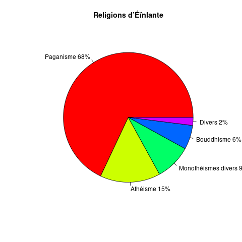

Une Grammaire du Mattér
Table des matières
- Avant-propos
- 1. Introduction
- 2. Phonologie
- 3. Topologie morphologique
- 4. Classes de mots
- 5. Ordre des constituants basiques
- 6. Prédicats nominaux
- 7. Phrases existentielles, locationnelles et possessives
- 8. Expression des relations grammaticales
- 9. Temps, aspects et modes
- 10. Négation
- 11. Combination de clauses
- 12. Structures marquées pragmatiquement
- 13. Nombres
- 14. Glossaire
- 14.1. Actions physiques
- 14.2. Amour
- 14.3. Animaux
- 14.4. Art
- 14.5. Astronomie
- 14.6. Bâtiments
- 14.7. Commerce
- 14.8. Conflits
- 14.9. Conteneurs
- 14.10. Corps
- 14.11. Couleurs
- 14.12. Dimensions
- 14.13. Direction
- 14.14. Eau
- 14.15. Effort
- 14.16. Éléments
- 14.17. Émotions
- 14.18. Évaluation
- 14.19. Événements
- 14.20. Existence
- 14.21. Forme
- 14.22. Gouvernement
- 14.23. Grammaire
- 14.24. Guerre
- 14.25. Légal
- 14.26. Lieux
- 14.27. Lumière
- 14.28. Mental
- 14.29. Mesures
- 14.30. Métaux
- 14.31. Mouvements
- 14.32. Nature
- 14.33. Nombres
- 14.34. Nourriture
- 14.35. Outils
- 14.36. Parenté
- 14.37. Parole
- 14.38. Péchés
- 14.39. Peuples
- 14.40. Physique
- 14.41. Possession
- 14.42. Religion
- 14.43. Savoir
- 14.44. Sensations
- 14.45. Sexe
- 14.46. Société
- 14.47. Substances
- 14.48. Temps
- 14.49. Travail
- 14.50. Végétaux
- 14.51. Vêtements
- 14.52. Vie et santé
- 14.53. À trier
Avant-propos
La redistribution ou vente de ce document sont strictement interdits. Ce document est protégé par la loi française sur le droit d’auteur et appartient entièrement et totalement à son auteur. Ce document est un document disponible gratuitement au format web et pdf sur mon site web1. Si vous l’avez obtenu depuis une autre source, gratuitement ou non, merci de m’en faire part en me contactant via mes réseaux sociaux ou par mail que vous trouverez sur mon site principal2. Aucune personne, morale ou physique, n’est à l’heure actuelle autorisée à redistribuer ces documents. Si vous êtes intéressés par une redistribution de ce document, je vous invite à rentrer en contact avec moi afin que l’on en discute.
Ce document traite d’une langue imaginaire que j’ai créé. Cependant, il sera rédigé comme s’il s’agissait de la première tentative de description de la langue par un linguiste la découvrant. Ainsi, si dans certains passages vous pouvez lire « mais plus d’études sur le sujet sont nécessaires » ou « cet aspect de la langue n’a pas encore été sujet à des analyses plus approfondies », comprenez par cela que je n’ai pas encore travaillé sur ou fini cette partie qui peut être sujet à des mises à jours dans le futur.
Dernière mise à jour le 22/06/19 à 09:57
1 Introduction
Le Mattér est une idéolangue (langue construite) humaine, inspirée par des langues nordiques, germaniques et latines. Elle bénéficie également de quelques inspirations des idéolangues elfiques de J.R.R. Tolkien, en particulier la phonétique du Sindarin. Brièvement, le Mattér est une langue principalement agglutinative à tendance majoritaire aux suffixes, avec comme exception les verbes qui ont une tendance principalement fusionnelle.
Cette langue est un projet à part de mon univers littéraire ; il ne s’agit que d’une langue jouet dont la seule utilité au-delà de mon propre plaisir sera dans le cadre de mes études d’informatique pour un projet de troisième année de licence en ingénierie des langues.
Ce document utilisera les conventions habituelles des ouvrages linguistiques,
tel que le gloss pour le détail linguistique d’une phrase, ou les phrases
incorrectes marques par une étoile * et les phrases questionnables par un
point d’interrogation ?.
1.2 Démographie

Figure 1 : Carte du XIXème siècle d’Éïnlante
Le Mattér est parlé par un peuple imaginaire vivant sur une île également imaginaire nommée Éïnlante (terre solitaire, Einlant en Mattér), peuplée vers la fin du IXème siècle par un peuple parlant le Vieux Nordique, partis probablement de la péninsule scandinave ou des jeunes colonies Islandaise par bateau. À l’instar de l’Islande, le peuple Matté s’y étant installé est devenu isolé, permettant une évolution unique de leur langue.
Initialement, l’Éïnlante n’était peuplé que de quelques dizaines de milliers de Mattés, cependant leur population connaît une croissance importante à partir du XXème siècle avec une industrialisation et modernisation du pays jusqu’à atteindre au début du XXIème siècle 2.000.000 habitants.
L’Éïnlante est une île de taille similaire à sa sœur, l’Islande, mais se situe plus au sud de cette dernière, acccu sud-est du Groënland et à l’ouest de l’Écosse. Son centre se situe aux alentours des coordonnées 57′N 33′O. Ainsi, cette île bénéficie d’un climat plus clément que l’Islande et similaire à l’Écosse : un climat océanique tempéré mais froid, avec des vents fréquents. Cette île est également une île volcanique, née du rift du plancher atlantique.
Le peuple Matté est un peuple dont l’économie repose principalement sur la pêche et l’agriculture. Au XVème siècle, le pays commence à s’ouvrir avec l’extérieur, et des voies de commerce sont ouvertes avec les principaux pays marchands de cette époque. C’est à cette époque que le Christianisme est importé en Éïnlante, puis un siècle plus tard l’Anglicanisme par le Royaume-Uni, cependant ces deux religions ne réussiront jamais à véritablement s’implanter, la religion nordique païenne restant largement dominante jusqu’au XIXème siècle où un déclin rapide des diverses religions aura lieu. De nos jours, la population d’Éïnlante est à environ 68% païenne, 15% athéiste, 9% de sa population suit une des religions monothéistes (principalement le Protestantisme et le Chistianisme), 6% bouddhiste et 2% de la population suit des religions diverses (Hindouisme, Chamanisme,…).

Figure 2 : Population religieuse d’Éïnlante
1.3 Histoire
Éïnlante fût colonisée pour la première fois par des explorateurs scandinaves lors des grandes expéditions vikings. L’île fut découverte en 863, peut de temps après la découverte de l’Islande, et commença à être peuplée à partir de 882 sur la partie orientale de l’île avec la fondation de la ville de Hurfialthère (Hyrfialþær). Sa partie occidentale fut colonisée à partir de 884 lors de la fondation de la future capitale d’Éïnlante, Dhébergette (Ðeberget).
1.4 Affiliation générique
Le Mattér est une langue Indo-européenne trouvant ses sources dans la famille des langues scandinaves (germaniques nordiques). Plus précisément, elle a directement évolué du Vieux Nordique parlé par les premiers colons d’Éïnlante. Le Mattér a tout de même quelques traces latines, anglaises et françaises, plus récentes, s’étant intégrées à la langue à partir du début des échanges commerciaux entre Éïnlante et les puissances européennes.
1.5 Système d’écriture
Du fait de son affiliation aux langues nordiques, le Mattér est une langue qui s’est d’abord gravée via l’utilisation de runes, que ce soit sur des pierres ou sur du bois. L’alphabet latin ne sera introduit que plus tard, vers le XVème siècle, où il sera pendant longtemps utilisé en parallèle aux runes. Généralement, les runes sont gardées pour les monuments et les documents officiels ainsi que pour une utilisation religieuse, tandis que l’alphabet latin se popularise parmi les marchands et tout échanges entre les Mattés et le monde extérieur. Ainsi, deux systèmes d’écriture coexistent. L’introduction de l’imprimerie participa également à une chute de l’utilisation quotidienne des runes, et seule une rapide intervention du gouvernement afin de créer des caractères d’imprimerie runiques a permis de préserver une utilisation relativement courante du système d’écriture traditionnel. Lors de l’avènement de l’informatique, l’utilisation des runes a drastiquement chuté parmi la population, lui préférant alors l’alphabet latin. Avec l’ajout des runes à l’Unicode 3.0, un effort considérable de la part du gouvernement s’est effectué afin de restaurer l’utilisation de celles-ci, mais en vingt ans la proportion d’utilisation des runes n’a pas beaucoup remonté, bien que la chute fut stoppée grâce à cette intervention.
Comme pour l’Islande, il existe une théorie comme quoi les premiers habitants de l’île n’auraient pas été réellement des scandinaves, mais plutôt des moines catholiques irlandais. Bien qu’ils n’aient laissé aucune trace d’un point de vue religieux, leur présence expliquerait l’existance et l’utilisation précoce de l’alphabet latin chez le peuple Matté comparé aux autres peuples nordiques, ainsi que la présence de caractères venant des îles britanniques, notamment le “g” insulaire “ᵹ”, le wynn “ƿ” ou le yogh “ȝ”.
Plus d’informations seront données dans le chapitre dédié au système d’écriture Mattér (§2.7).
1.6 Situation sociolinguistique
1.6.1 Multilinguisme et contexte d’utilisation
Le Mattér est une langue encore très vivante parmi les Mattés, qui est parlée activement par tous les locuteurs natifs. Concernant le multilinguisme, les Mattés ont commencé à apprendre des langues étrangères lors de leur ouverture au monde, apprenant principalement l’Anglais, le Suédois et l’Espagnol. Aujourd’hui, la majorité des Mattés parlent avec un niveau B1 l’anglais, environ 30% parlent avec le même niveau le Suédois ou le Norvégien, et du fait de leur proximité avec le Groënland, environ 20% de la population parle également le Danois.
1.6.2 Viabilité
Le Mattér est une langue très active, parlée par tous les habitants d’Éïnlante en tant que leur langue maternelle. Cependant, il est très peu parlé en dehors des frontières du pays, principalement par les territoires proches géographiquement et culturellement d’Éïnlante, principalement le Groënland, l’Islande et les pays scandinaves par quelques diasporas et quelques curieux de la culture Mattér.
1.6.3 Mots d’emprunt
La large majorité des mots du Mattér, en particulier les termes quotidiens, viennent du Vieux Nordique, langue parlée en Scandinavie et par les premiers habitants de l’île. Cependant, avec la naissance d’un commerce important entre Éïnlante et les différentes puissances européennes, le Mattér incorpora certains mots venant de ces langues européennes, comme le Suédois, l’Anglais ou le Français. Cependant, ces mots d’emprunts restent rare, les Mattés préférant généralement créer de nouveaux mots à bases de racines Mattér, bien que souvent reprenant l’étymologie du mot emprunté, plutôt qu’un emprunt direct dans la langue. Ainsi, « télévision » est traduit par « lynþyn », reprenant la racine télé- (« loin ») + « vision ».
1.7 Dialectes
Bien que l’on parle de « Mattér » dans cet ouvrage, il ne s’agit en réalité que de l’une des formes de la langue que l’on peut trouver historiquement. En effet, de nombreux dialectes du Mattér étaient parlés en Éïnlante, formant un vaste réseau de langues toutes plus ou moins inter-compréhensibles. Les dialectes d’Éïnlante orientale présent toutefois une différence plus importante entre leur groupe et le groupe des dialects occidentaux. On en retrouve encore des traces importantes de nos jours, avec notamment un accent remarquable aisément et quelques différences de vocabulaire concernant les objets quotidiens. Tandis qu’au cours du XXème siècle tous les dialectes se sont standardisés sur le dialecte de Dhébergette, les dialectes orientaux se sont également standardisés sur le dialecte d’Hurfialthère, donnant ainsi un nouveau dialecte hybride disposant des codes et de la grammaire occidentale, mais d’une prononciation et d’un vocabulaire orientaux. Le dialecte de la capitale est le dialecte officiel de l’île ainsi que celui utilisé par les médias et enseigné dans les écoles, collèges et lycées. Cependant, Éïnlante reconnait l’existance de dialectes locaux et encourage leur apprentissage.
2 Phonologie
2.1 Notes sur la transcription du Mattér
Comme vous pourrez vous en rendre compte aux chapitres §2.2.1 et §2.2.2, le Mattér dispose de deux transcriptions possibles qui seront les transcriptions principalement utilisées dans cet ouvrage, la transcription en IPA (International Phonetic Alphabet3) et le script latin natif du Mattér qui sera généralement plus simple et intuitif à lire, malgré un apprentissage sans doute nécessaire de certains caractères. Dans le cas du Mattér, les deux reflètent dans la large majorité des cas la prononciation de la langue, et c’est pour cela que j’utiliserai principalement l’alphabet latin natif. Cependant il peut y avoir certains cas où la prononciation peut légèrement différer de l’orthographe, comme dans les cas d’allophonie (§2.3) ou autres cas inhabituels, auquel cas j’utiliserai la transcription phonétique afin de rendre claire la prononciation. Quand il sera question de transcription phonétique, il sera généralement question de phonétique générale, mais il se peut que certaines distinctions se fassent à un niveau plus fin où une transcription phonétique rapprochée sera nécessaire pour avoir la prononciation exacte, auquel cas je signalerai cette distinction entre phonétique générale et rapprochée.
La transcription phonétique sera donnée [entre crochets], tandis que des éléments en script natif du Mattér seront <entre chevrons>. La transcription phonétique sera la prononciation générale, et occasionnellement, quand indiqué la phonétique pourra également être une phonétique rapprochée, dénotant une plus grande précision phonétique, notamment dans le chapitre sur l’allophonie (§2.3) ci-dessous.
Il existe également le système d’écriture runique du Mattér, la méthode d’écriture originale de cette langue, mais ce système ne sera utilisé que dans son chapitre dédié (§2.7).
2.2 Inventaire phonétique
L’inventaire phonétique est l’une des signatures d’une langue qui se remarque le plus rapidement. Il s’agit de la collection des sons utilisés en Mattér, ceux que peuvent prononcer ses locuteurs et pouvant être utilisés dans un discourt lors de la production de mots et de phrases. Les phonèmes sont les unités sonores les plus petites constatables dans une langue.
On distingue généralement deux catégories de phonèmes : les voyelles, dont la production se fait sans obstruction du passage de l’air dans la bouche, et les consonnes où un certain type d’obstruction au passage de l’air se réalise le plus souvent. Par exemple, le [y] (tel que le <u> de « lune » en Français) se prononce avec les lèvres arrondies, la bouche presque fermée et la langue relevée, alors que le [p] se caractérisera par l’arrêt puis le relâchement soudain de l’air au niveau des deux lèvres sans faire vibrer les cordes vocales en même temps. Ils existent également les diphtongues qui sont considérées par certaines langues, comme par exemple l’Anglais, qui considère une association de deux voyelles comme étant une voyelle unique. Tout cela sera expliqué plus en détails ci-dessous.
Comme mentionné en introduction (§2.3), le choix de l’inventaire phonétique du Mattér s’est basé sur l’inventaire phonétique de langues elfiques créées par Tolkien, notamment le Sindarin.
2.2.1 Consonnes
Le Mattér est une langue disposant d’un panel raisonnable de seize consonnes. Voici ci-dessous le tableau des consonnes du Mattér, en IPA et en latin (voir §2.1).
| nasal | occlusif | fricatif | spirant | battu | spir.-latt. | |
|---|---|---|---|---|---|---|
| bilabial | m | p b | ||||
| labio-dental | f v | |||||
| alvéolaire | n | t d | θ ð | ɾ | l | |
| palatal | ç | j | ||||
| labio-velaire | w | |||||
| vélaire | k g | |||||
| glottal | h |
| nasal | occlusif | fricatif | spirant | battu | spir.-latt. | |
|---|---|---|---|---|---|---|
| bilabial | m | p b | ||||
| labio-dental | f v | |||||
| alvéolaire | n | t d | þ ð | r | l | |
| palatal | ċ | i | ||||
| labio-velaire | ƿ | |||||
| vélaire | c g | |||||
| glottal | h |
On peut remarquer que la large majorité des consonnes se situe entre les points d’articulation alvéolaire et bilabial, et toutes les consonnes occlusives ou fricatives disposent de leur contrepartie sourde ou voisée.
Voici ci-dessous une description individuelle de chaque consonne :
- b
- Il s’agit du <b> standard dont disposent le Français dans « bonbon » [bɔ̃bɔ̃] ou l’Anglais « believe » [bɪlɪv], une consonne bilabiale occlusive voisée [b].
- c
- Il s’agit du <k> non aspiré que l’on peut retrouver en Français comme « cas » [ka] ou dans certains cas en Anglais comme dans « skirt » [skɜːtʰ]. Il s’agit donc de la consonne occlusive uvulaire sourde [k].
- ċ
- Ce <ċ> (ou <ch> / <ȝ>) existe en Allemand dans des termes tels que « nicht » [nɪçt] ou en Anglais Britannique dans « hue » [çʉː]. Il s’agit d’une consonne fricative palatale sourde [ç].
- d
- Il s’agit de la consonne <d> standard que l’on peut retrouver en Anglais dans « dice » [daɪs], où le <d> est prononcé en bloquant l’arrivée d’air au niveau de la partie rugueuse du palais. Il est donc différent du <d> français qui est prononcé avec la langue rapprochée voire touchant les dents et qui est noté [d̪], comme dans « dance » [d̪ɑ̃s]. Le <d> du Mattér est donc bel et bien une consonne occlusive alvéolaire voisée [d].
- f
- Il s’agit du <f> standard que l’on retrouve bon nombre des langues telles que le Français [fʁɑ̃sɛ] ou l’Anglais « fit » [fɪtʰ]. Il s’agit donc d’une consonne fricative labio-dentale sourde [f].
- g
- Ce <g> (ou <ᵹ> est le <g> dur standard que l’on retrouve dans bon nombre des langues telles que le Français dans « Gar » [ɡɑʁ] ou en Anglais dans « get » [ɡɛt]. Il s’agit donc d’une occlusive vélaire voisée [g].
- h
- Il s’agit de la même consonne que le [h] que l’on retrouve en Anglais, tel que dans « high » [haɪ̯] ou en Allemand « Hass » [has]. Il s’agit donc de la consonne friccative glottale sourde [h].
- i
- Le <i> représente la voyelle <i> prononcée comme une consonne, la rendant donc effectivement semi-consonne. On la retrouve en Français dans des mots tels que « yak » [jak] ou « yoyo » [jojo]. Il s’agit donc d’une consonne approximante rétroflexe voisée [j].
- l
- Ce <l> est le <l> que l’on peut retrouver en Français dans « lire » [liʁ] et dans certains cas en Anglais dans « live » [lɪv]. Le <l> du Mattér est donc une consonne alvéolaire spirante-latérale voisée [l].
- m
- Il s’agit du même <m> que le <m> standard en Français « mère » [mɛʁ] ou en Anglais « me » [miː]. Il s’agit donc de la consonne nasale bilabiale voisée [m].
- n
- Il s’agit du <n> standard que l’on retrouve en Anglais comme dans « not » [nɔt]. Attention, cette consonne est alvéolaire et non dentale comme le <n> français de « nuit » [n̪ɥi]. Il s’agit donc d’une consonne nasale alvéolaire voisée [n].
- p
- Il s’agit du <p> non aspiré que l’on retrouve en Français tèl que dans « père » [pɛʁ] ou dans certains cas en Anglais comme dans « spoon » [spuːn]. Il s’agit donc de la consonne occlusive bilabiale sourde [p].
- r
- Ce <r> peut être retrouvé en Espagnol « perro » [ˈpe̞ro̞], en Tchèque dans « chlor » [xlɔ̝ːr] ou encore en Anglais Écossais « curd » [kʌrd]. Il s’agit d’une consonne alvéolaire roulée voisée [r].
- t
- Ce <t> est la contrepartie voisée de <d> et peut se trouver en Danois « dåse » [tɔ̽ːsə], en Luxembourgeois « dënn » [tən] ou en Finnois avec « parta » [pɑrtɑ]. Attention, le <t> Français est dental, comme dans « tante » qui est prononcé [t̪ɑ̃t̪]. Ainsi, le <t> du Mattér est la consonne occlusive alvéolaire sourde [t].
- v
- Le <v> du Mattér peut être retrouvé dans des langues tels que le Français dans « valve » [valv], en Allemand « Wächter » [vɛçtɐ] ou en Macédonien « вода » [vɔda]. Il s’agit donc d’une consonne fricative bilabiale voisée [v].
- ð
- Cette consonne <ð> peut être trouvée dans des langues tels que l’Anglais dans « this » [ðɪs], en Allemand Autrichien « leider » [laɛ̯ða] ou en Swahili dans « dhambi » [ðɑmbi]. Il s’agit donc de la consonne fricative dentale voisée [ð].
- þ
- Il s’agit de la contrepartie sourde de <ð> qui peut être trouvée en Anglais dans « thin » [θɪn], en Malaisien dans « Selasa » [θelaθa] ou en Espagnol Castillan « cazar » [käθär]. Il s’agit de la consonne fricative dentale sourde [θ].
- ƿ
- Le <ƿ> est un équivalent du <w> est un son que l’on peut retrouver dans certaines langues comme le Français dans « oui » [wi], en Anglais avec « weep » [wiːpʰ], ou en Irlandais « vóta » [ˈwoːt̪ˠə]. Il s’agit de la consonne approximante labio-velaire voisée [w].
Les consonnes nasales, occlusives ainsi que le [l] peuvent être doublées, alongeant ainsi leur prononciation. Ainsi, le <tt> de <Mattér> sera prononcé [tː], et <Mattér> sera prononcé ['mat:er].
2.2.2 Voyelles
Le Mattér dispose de relativement peu de voyelles, uniquement six. Voici leur tableau :
| antérieures | centrales | postérieures | |
|---|---|---|---|
| fermées | i / y | u | |
| mi-fermées | e | [ə] | |
| mi-ouvertes | ɛ | ɔ | |
| ouvertes | a |
| antérieures | postérieures | |
|---|---|---|
| fermées | i / y | u |
| mi-fermées | é | |
| mi-ouvertes | e | o |
| ouvertes | a |
On peut constater que le Mattér est une langue disposant d’une complexité modeste concernant ses cinq voyelles antérieures et d’une simplicité apparente concernant ses deux voyelles postérieures. On notera également que le [ə] est noté entre crochets du fait de sa situation en Mattér en tant qu’allophone (voir le chapitre §2.3) et jamais en tant que voyelle existant par elle-même. Cela implique également son absence du tableau de translittération.
Voici ci-dessous la description de chacune de ces voyelles :
- a
- Il s’agit de la voyelle antérieure ouverte non-arrondie [a] que l’on retrouve dans « patte » [pat] en Français.
- e
- Il s’agit de la voyelle antérieure mi-ouverte non-arrondie [ɛ] que l’on retrouve dans « bet » [bɛtʰ] en Anglais ou « fête » [fɛt̪] en Français.
- é
- Il s’agit de la voyelle antérieure mi-fermée non-arrondie [e] que l’on retrouve dans « blé » [ble] en Français.
- i
- On peut retrouver cette voyelle en Anglais comme dans « free » [fɹiː], « ív » [iːv] en Hongrois ou « vie » [vi] en Français. Il s’agit de la voyelle antérieure fermée non-arrondie [i].
- o
- Il s’agit de la voyelle postérieure mi-ouverte arrondie [ɔ] que l’on peut retrouver dans « sort » [sɔʁ] en Français, « not » [nɔt] en Anglais australien et néo-zélandais, ou encore dans « voll » [fɔl] en Allemand standard.
- u
- On peut retrouver cette voyelle en Allemand standard dans « Fuß » [fuːs] ou en Français dans « tout » [t̪u]. Il s’agit de la voyelle postérieure fermée arrondie [u].
- y
- On peut retrouver cette voyelle en Allemand standard dans « über » [yːbɐ], en Hongrois avec « tű » [t̪yː] ou tout simplement en Français dans « lune » [lyn]. Il s’agit de la voyelle antérieure fermée arrondie [y].
- [ə]
- Cette voyelle se prononce de façon relativement similaire à « le » [lə] en français, dans le suffixe « -lijk » [lək] en Néerlandais, ou encore dans « pare » [paɾə] en Catalan. Il s’agit du schwa.
2.2.3 Diphtonges
Les diphtongues sont des associations de voyelles considérées dans une langue comme étant une voyelle unique, avec la première unité portant la longueur de la voyelle, la seconde n’étant prononcée qu’en relâchant la voyelle. Ainsi, en Anglais, les diphtongues sont assez communes comme avec le terme « je », « I » prononcé [aɪ]. Voici la liste des diphtongues existant en Mattér :
| latin natif | IPA |
|---|---|
| ei | [ei] |
| ea | [ɛa] |
| ou | [ɔu] |
| ai | [ai] |
| æ | [ae] |
| au | [au] |
Toutes ces combinaisons sont, comme décrit ci-dessus, monosyllabiques et sont considérées comme telles par les locuteurs de cette langue. Leur translittération est simple, comme vous pouvez voir ci-dessus. Ces diphtongues se produisent naturellement lors de la juxtaposition des deux voyelles les formant, et elles peuvent déjà être présentes dans une racine de mot. Ainsi, si une déclinaison ajoute un <a> après un <e>, la diphtongue <ea> se produira naturellement, comme pour la forme nominative de <tere> (tour) qui devient <tereant> dans sa forme accusative.
2.3 Allophonie
Bien qu’étant rares, le Mattér a quelques règles à appliquer concernant l’allophonie.
- Si deux voyelles pouvant former une diphtongue se suivent, alors la diphtonge se produira. Exemple : Le <ea> de <tereant> est une diphtongue malgré que le <-ant> ne soit qu’une clitique accolée à <tere> et non partie intégrante de la racine du mot.
- S’il est suivi d’une voyelle dans le même mot, le [i] se transforme en la semi-consonne [j]. Exemple : <friant> (libre-ACC) [frjant]
- Le [i] peut également se prononcer [ɪ] dans certains cas, comme dans les diphtongues, devant un [ç], [j], [w] ou [l], selon le locuteur. Exemple : <neiċ> [nɛɪç]
- Le [a] non accentué et placé dans une syllabe n’étant pas la dernière d’un mot (sauf si cette dernière se fini par une consonne nasale) se prononcera comme un schwa lors de l’utilisation d’un niveau de langage n’étant pas soutenu. Exemple : <fician> [ˈfikjən], <gilðaryt> [ˈɡilðəryt]
- Si un [ɛ] suit un [e] ou vice-versa, alors la première voyelle sera silencieuse et la seconde sera géminée. Exemple : <tereém> se prononce [tɛreːm]
- Le [l] se transforme en « <l> sombre » [ɫ] en fin de syllabe, en particulier avant une pause ou un silence. Exemple : <mæl> [maeɫ]
- Le [l] géminé [lː] se prononce [ɫː] dans toutes ses occurrences.
- Le [h] se platalise en [ç] s’il est suivi par un [j], un [e] ou un [i]. Exemple : <hét> [çet]
- Si le [h] se trouve entre deux voyelles, il se voisera en un [ɦ].
- Le [r] se prononcera [ɾ] s’il se situe entre deux voyelles ou [w] et [j].
2.4 Phonotaxes
Les phonotaxes sont des règles importantes car elle permettent de déterminer quelles sont les associations de sons possibles dans une langue. C’est ce genre de règles qui permettent de savoir que des mots tels que <iċkƿufrƿt> ou <nkƿei> ne sont pas possibles tandis que des mots tels que <éliond> ou <yndeþt> le sont. Nous avons déjà déterminé dans la partie dédiée aux diphtongues (§2.2.3) et les voyelles pouvant se succéder afin de créer une diphtongue. En revanche, si deux voyelles se suivent sans entrer dans les règles des diphtongues, elles seront considérées comme étant bi-syllabiques, c’est à dire que chacune sera considérée comme une syllabe à part.
Concernant les consonnes, différentes règles s’appliquent selon la situation dans la syllabe.
2.4.1 Attaque
L’attaque est la première partie de la syllabe, les premières consonnes la composant. Elle peut comporter d’aucune consonne à deux consonnes ne contenant pas de semi-voyelle, trois avec une semi-voyelle comme consonne finale.
- Le [j] ne peut être suivi par un [i].
- Le [w] ne peut être suivi par une voyelle postérieure.
- Les fricatives et occlusives peuvent être suivies par un [r] ou un [l], ou par une semi-voyelle.
- Les fricatives peuvent être suivies par une occlusive, par un [r] ou un [l].
- Le [ç] ne peut être suivi par une occlusive voisée.
- Le [h] ne peut être suivi que par un [j] ou un [w] et ne peut pas suivre une autre consonne.
2.4.2 Coda
Le coda (la seconde partie consonnantique de la syllabe la terminant) est composée d’aucune à deux consonnes.
- Les semi-consonnes [j] et [w] ne peuvent se situer dans le coda.
- Les consonnes [r] et [l] peuvent être suivies par une consonne nasale, occlusive ou fricative.
- Les fricatives sourdes ne peuvent être suivies que par des occlusives sourdes.
- Les fricatives voisées ne peuvent être suivies que par des occlusives voisées ou par des nasales.
- Les nasales peuvent êtres suivies par une occlusive ou une fricative.
- Les occlusives sourdes peuvent être suivies par un [θ].
- Les occlusives voisées peuvent être suivies par un [ð].
- Le [h] ne peut pas se situer dans le coda.
2.4.3 Inter-syllabe
Les consonnes inter-syllabes, situées entre deux voyelles, sont soumises elles aussi à des règles qui leur sont propres.
- Toutes les règles de l’attaque (§2.4.1) sont applicables.
- Les consonnes occlusives peuvent être suivies par une fricative, par un [r] ou un [l].
- Les consonnes bilabiales peuvent être suivies par des occlusives voisées.
- Le [h], tel que dans l’attaque, ne peut s’associer qu’avec le [j] ou le [w] qui le suivent.
- Les consonnes longues (géminées) ne peuvent se produire qu’entre deux syllabes et ne peuvent s’associer à d’autres consonnes.
2.5 Accentuation
Le Mattér est une langue dont l’accentuation est assez simple à suivre étant donné qu’elle se produit sur la syllabe initiale de tout mot constitué de deux syllabes ou plus : l’accent principal porte sur la première syllabe. Pour les mots de trois syllabes, un accent secondaire, moins important que le premier, portera sur la troisième syllabe, et pour les mots de quatre syllabes ou plus il portera sur l’avant-dernière syllabe.
Exceptionnellement, si le locuteur veut mettre une emphase sur un certain terme, une modification supra-segmentale de l’accentuation habituelle s’effectuera : l’accentuation portera sur la seconde syllabe, voire la troisième dans des cas plus rare et dont l’emphase est presque caricaturée. Cela déplacera également l’accent secondaire sur la première syllabe si le mot contient au moins trois syllabes.
2.6 Accents régionaux
Du fait du volume de sa population ainsi que de la taille de l’île d’Éïnlante, le Mattér a des variantes régionales se distingant du Mattér standard décrit dans cet ouvrage. Peu de recherches ont été menées sur ces variances, cependant voici ce qu’il en ressort selon une étude préliminaire.
La variation la plus importante du Mattér standard à un Mattér régional se trouve sur la partie orientale de l’île. On suppose que cela est dû à la division physique de cette dernière dûe à ses volcans, provoquant une division du peuple en deux zones distinctes, et bien qu’il leur ait toujours été possible de communiquer et d’échanger par voie navale, cette division a apportée son lot de modifications au Mattér oriental. La différence la plus flagante est sans doute sa phonétique et ses voyelles, ces dernières ayant connu un relâchement global, et même pour certaines un arrondissement voire un mouvement vers des voyelles antérieures. On peut également remarquer l’ajout de nouvelles voyelles, dû aux diphtongues ayant elles aussi subit un changement.
| antérieures | centrales | postérieures | |
|---|---|---|---|
| pré-fermées | ɪ | ʊ | |
| mi-fermées | ø | ||
| moyennes | [ə] | ||
| mi-ouvertes | ɛ / œ | ʌ / ɔ | |
| pré-ouvertes | æ | ɐ | |
| ouvertes | ɑ / ɒ |
En résumé, voici ci-dessous la correspondance des voyelles du Mattér standard et du Mattér oriental (les phonèmes omis sont inchangés).
| standard | oriental |
|---|---|
| i | ɪ |
| y | ø |
| u | ʊ |
| e | ɛ |
| ɛ | æ |
| a | ɑ |
| ei | aɪ |
| ea | œ |
| eu | ɐ |
| ɔu | ɔʊ |
| ai | ɒɪ |
| ae | ɒ |
| au | ʌ |
Le Mattér oriental dispose également de quelques diphtongues supplémentaires, présentées ci-dessous. Notez que ces diphtongues ne se produisent qu’en fin de mot uniquement.
| latin natif | IPA |
|---|---|
| ir | ɪə |
| ur | ʊə |
| ér | ɛə |
| or | ɔə |
| ar | ɑə |
| eur | ɐə |
| aer | ɒə |
| aur | ʌə |
De plus, les voyelles <e> et <ae>, en plus de <a> subissent elles aussi un affaiblissement dans les syllabes non accentuées, et les trois s’affaibliront toujours en fin de mot, et disparaissent même si la voyelle est suivie d’une pause et qu’elle fait partie d’un mot pluri-syllabique.
Comme on peut le constater, le Mattér oriental est plus riche en voyelles que le Mattér standard.
Voici des exemples de texte en Mattér, avec le suivant sa prononciation standard et sa prononciation orientale :
- É meþ dy a hynd altið gyiener flyttene.
- Standard
- [e mɛθ dy a hynd ˈaltið ˈɡyˌjɛnɛr ˈflyˌtːɛnɛ]
- Oriental
- [ɛ məθ dø ə hønd ˈɑltɪð ˈɡøˌjænær ˈfløˌtːæn]
- Mæbroryċ dia meccilant beiþ urbyċ beiþ.
- Standard
- [ˈmaeˌbrɔryç dja ˈmeˌkːilənt beiθ ˈurbyç beiθ]
- Oriental
- [ˈmɒˌbrɔrøç djə ˈmɛˌkːɪlənt bɛɪθ ˈʊrbøç bɛɪθ]
2.7 Système d’écriture
Le système natif d’écriture Mattér est l’alphabet runique. Voici la correspondance entre chacun des phonèmes du Mattér et des runes utilisées nativement dans leur ordre alphabétique natif :
| script latin | rune | nom |
|---|---|---|
| a | ᚪ | areð |
| b | ᛒ | bér |
| c | ᚳ | calfér |
| d | ᛞ | dur |
| e | ᛖ | eldyr |
| ea | ᛠ | ealant |
| f | ᚠ | feioð |
| g | ᚷ | gelty |
| h | ᚻ | héþir |
| i | ᛁ | iéral |
| j (uniquement en runes) | ᛄ | iara |
| l | ᛚ | logar |
| m | ᛗ | mény |
| n | ᚾ | néf |
| o | ᚩ | orn |
| p | ᛈ | pyl |
| r | ᚱ | rinna |
| t | ᛏ | tið |
| u | ᚢ | ulv |
| v | ᛝ | vér |
| y | ᚣ | ylgar |
| æ | ᚫ | ævy |
| é | ᛟ | éþƿér |
| ð | ᛋ | ðengil |
| þ | ᚦ | þær |
| ċ | ᛇ | ċuðar |
| ƿ | ᚹ | ƿyrm |
| séparateur de mots | ᛫ | þticyl |
| marquer de pauses | ᛬ | ċild |
| séparateur de phrases | ᛭ | ru |
Exceptionnellement, et contrairement aux autres, les diphtongues <ae> et <ea> disposent de leur propre morphème, respectivement <ealant> et <ċild>. Cet alphabet est généralement utilisé horizontalement de gauche à droite et de haut en bas, mais il arrive occasionnellement que ces runes soient écrites verticalement lors de gravures, de haut en bas et de droite à gauche.
Voici un texte d’exemple transcrit en alphabet latin ainsi qu’écrit en runes :
- Français
- Demain, du lever au coucher du soleil, nous irons pêcher.
- Mattér (script latin)
- morgoċ, gyrnegac þcyrmém, y ficianur.
- Mattér (runes)
- ᛗᚩᚱᚷᚩᚳᚻ᛬ᚷᚣᚱᚾᛖᚷᚪᚳ᛫ᚦᚳᚣᚱᛗᛟᛗ᛬ᚣ᛫ᚠᛁᚳᛄᚪᚾᚢᚱ᛭
Le Mattér peut également être écrit avec les caractères latins standard, comme fait dans quasiment tout ce document, cependant en dépendant beaucoup moins de caractères pouvant paraître « exotiques », pouvant être plus simples d’accès aux personnes utilisant une disposition de clavier n’étant pas pensée afin d’écrire du Mattér :
| caractère natif | caractère alternatif |
|---|---|
| þ / ᚦ | s / th |
| g / ᚷ | ᵹ |
| ƿ / ᚹ | w |
| ċ / ᛇ | ȝ / ch |
| i / ᛄ | j |
| ð / ᛋ | z / dh |
| æ / ᚫ | ae |
De ce fait, des mots tels que <bryð> et <þpiċ> peuvent s’écrire <bryz> ou <brudh>, et <spich> ou <thpiȝ> respectivement.
Ainsi, trois façons d’écrire le Mattér sont possible : l’alphabet runique, natif à la langue, l’alphabet latin adapté au Mattér, et enfin la transcription alternative qui n’est utilisée que dans ce document et par des personnes n’ayant pas aisément accès aux caractères spéciaux du Mattér. Quelques exemples de ces différents systèmes d’écriture :
| latin natif | runique | alternatif |
|---|---|---|
| bryð | ᛒᚱᚣᛋ | bryz / brydh |
| þpiċ | ᚦᛈᛁᛇ | spich / thpiȝ |
| iea | ᛄᛠ | jea |
| mænd | ᛗᚫᚾᛞ | maend |
| neþty | ᚾᛖᚦᛏᚣ | nesty / nethty |
| ƿaċen | ᚹᚪᛇᛖᚾ | wachen / waȝen |
| ċciag | ᛇᚳᛄᚪᚷ | chcjaᵹ / ȝcjaᵹ |
2.8 Orthographe
Le Mattér, utilisant un de ses alphabets décrits ci-dessus, a une orthographe très régulière, chaque mot est écrit comme il est prononcé. La seule exception est occasionellement l’utilisation du iéral ᛁ dans les textes runiques où il se prononcera comme un iara ᛄ, ou bien des diphtongues qui se forment naturellement de l’adposition de deux voyelles. Cependant, cela ne présente pas de véritables difficultés orthographiques tant que l’on peut garder à l’esprit l’origine grammaticale du mot. Ainsi, les mots dérivés de <fri> s’écriront systématiquement avec un iéral et non avec un iara dans des termes tels que <friant>.
En réalité, l’erreur d’orthographe la plus commune chez les Matté est la non-utilisation du iara, qui tend à être de plus en plus remplacé par le iéral afin de refléter l’orthographe latine du Mattér. Certains militent même pour abroger le iara dans les orthographes officielles afin de simplifier ces dernières.
3 Topologie morphologique
Le Mattér est une langue à tendance polysynthétique, fortement orientée sur l’agglutination de mots et de particules pour son aspect grammatical, mais également de mots entre eux lors de la création de nouveaux mots. Bien que de nombreux mots du Mattér soient monosyllabiques ou bi-syllabiques dans leur forme standard, il n’est pas rare de les rencontrer avec des morphèmes supplémentaires, généralement des suffixes, leur donnant un rôle grammatical ou des informations supplémentaires, tel que leur nombre. Exemples :
Hyrfialþærun en marcéðoċ ficianantaþ þællea.
Hyrfialþær-un en marcéð-oċ fician-ant-aþ þæll-ea.
Hyrfialþær-GEN ART:DEF:NHUM:SG marché-LOC poisson-ACC-PL vendre-3SG:PRES:INDIC
Il vend du poisson au marché d’Hurfialthère.
On peut voir que chaque mot dans cette phrase dispose d’un élément grammatical distinct de sa racine, chacun de ces éléments grammaticaux permettant à la phrase d’avoir un sens compréhensible.
- Hyrfialþær est le lieu où se trouve le marché, et donc également le détermine ; il s’agit d’un marché, certes, mais le marché d’Hurfialthère. Ce dernier est donc décliné au génitif via l’ajout d’un suffixe un. On peut remarquer par ailleurs que le Mattér traite de manière identique les noms communs et les noms propre quant à la déclinaison grammaticale.
- ut est un article défini servant un indiquer un élément précis. Ici, il désigne un élément non-humain unique, le marché.
- Hyrfialþarén un marcéð est un groupe nominal désignant le lieu où s’est déroulée l’action, il est donc décliné au locatif. Notez que le groupe nominal est traité comme un bloc unique et non comme plusieurs entités séparées. Le groupe nominal se voit donc affixé par un oċ.
- fician signifie « poisson » en Mattér. Étant donné que plusieurs poissons sont vendus (l’indénombrable n’existe pas en Mattér), un suffixe aþ est accolé à fician afin de marquer le pluriel. Il s’agit ici du patient de la phrase verbale et est donc son objet et est de ce fait décliné à l’accusatif via l’ajout du suffixe ant.
- Le verbe présente la racine þæll qui n’est pas en soit un morphème libre, contrairement aux autres mots précédents sans leurs suffixes ; cela signifie que bien que þæll soit la racine du verbe « vendre », il ne peut pas être utilisé en tant que tel dans un discours en Mattér, et l’utilisation d’autre morphèmes liés à la racine sont nécessaires. Ainsi, le morphème ea permet d’indiquer l’accord avec l’agent du verbe qui est à la troisième personne du singulier, indique le temps présent et le mode infinitif. Il s’agit d’un exemple d’un des éléments polysynthétiques fusionnels du Mattér.
Les mots eux aussi sont, comme mentionné ci-dessus, un exemple du caractère fusionnel du Mattér. Par exemple, le nom de la ville Hurfialthère, ou Hyrfialþær dans son orthographe originale, est le composé de deux mots, « hyrfial » et « þær », signifiant respectivement « volcan » et « lagon, lac salé ». « Hyrfial » lui-même est également un mot composé de « hyr », signifiant « flamme », et de « fial » signifiant « montagne ». Ainsi, on sait qu’Hurfialthère a été nommée ainsi du fait de sa proximité à un volcan et du fait de sa situation géographique, dans un lagon presque fermé donnant sur la mer d’Éïnlante.
4 Classes de mots
Comme dans toutes les autres langues, plusieurs types de mots ayant plusieurs types de rôles existent en Mattér. Nous discuterons donc dans cette section des majeures classes de mots existant dans cette langue, les noms, les verbes, les adjectifs et les adverbes.
4.1 Noms
Le prototype d’un nom en Mattér est un mot se référant à des entitées définies. Certaines propriétés morphosyntaxiques permettent de reconnaître un nom d’un autre mot, comme la possession, les articles, le nombre ou le rôle grammatical. Cependant, il faut noter que ces deux derniers peuvent aussi être portés par les adjectifs (§4.3).
4.1.1 Nombre
Le Mattér est une langue faisant la distinction entre trois nombres pouvant être portés par un nom. Le singulier n’est pas marqué et est ainsi le nombre par défaut des noms, mais le paucal et le pluriel le sont. Généralement, le paucal est utilisé pour référencer une quantité peu importantes d’éléments, la définition prototypicale étant entre deux et six éléments ; au delà, le pluriel est utilisé. En réalité, l’utilisation du paucal ou du pluriel dépend grandement du jugement subjectif du locuteur et de s’il souhaite relever une quantité jugée peu importante des éléments indiqués, ou au contraire une quantité jugée importante.
Exemples :
- hynd
- un chien
- hyndet
- des (quelques) chiens
- hyndaþ
- des chiens
Quelques noms sont catégorisés comme étant indénombrables. Normalement, ils ne sont pas sensés prendre de marquage de nombre, cependant un locuteur dans un cadre informel pourra rajouter le morphème du paucal ou du pluriel afin d’exprimer une idée globale de quantité subjectivement faible ou importante.
Exemples :
- eldyr
- de l’eau
- eldyrt
- peu d’eau
- eldyrþ
- beaucoup d’eau
4.1.2 Genre
Le Mattér est une langue genrée, bien que faiblement. La différenciation de genre trouve son importance principalement lors de l’utilisation de certains articles ou avec les pronoms. Le genre est une information portée par les noms à un niveau sémantique, il faut donc apprendre par cœur les genres des différents mots, bien que les genres en Mattér soient très aisément prévisibles. Quatre genres existent en Mattér :
- Neutre (
N) - Masculin (
M) - Féminin (
F) - Non-humain (
NHUM)
Le masculin et le féminin sont utilisés pour désigner des éléments uniques ou des groupes uniformément masculins ou féminins respectivement. Si le genre d’une personne est inconnu, ou si l’on se réfère à un groupe hétérogène (même à partir de deux personnes), alors le genre neutre sera utilisé. Le genre non-humain se réfère, comme son nom l’indique, à des entités qui ne sont pas considérées comme étant humaines, comme des animaux ou objets. Concernant les animaux, il est tout de même possible d’utiliser le genre neutre pour se référer à des animaux envers lesquels une affection est exprimée (généralement les animaux domestiques), et un animal que l’on affectionne tout particulièrement (comme son animal de compagnie) peut se voir attribué un genre masculin ou féminin comme pour un humain. Les chiens et les chats en particulier ne se voient quasiment jamais attribués d’un genre non-humain.
Exemples :
- dottyryċ (ma fille) : féminin
- þonyċ (mon fils) : masculin
- dottyryċ ar þonyċ (mon fils et ma fille) : neutre
- cat ar hynd (un chat et un chien) : neutre
- boccéyċ : non-humain
4.1.3 Possession
Bien que le Mattér dispose de pronoms génitifs pouvant marquer une possession d’un nom par quelqu’un ou quelque chose, les noms peuvent comporter un élément possessif remplaçant ce pronom. Habituellement, l’utilisation du pronom est vu comme un style littéraire, alors que l’utilisation de la déclinaison est vue comme une utilisation plus informelle.
Exemples :
- ċeg hynd
- mon chien (formel)
- hyndyċ
- mon chien (informel)
En revanche, lors de l’utilisation de la déclinaison génitive, l’élément décliné est le possesseur et précède l’élément possédé.
Exemple :
- ċeg bruðyrun en boccé
- le livre de mon frère (formel)
- bruðyrunyċ en boccé
- le livre de mon frère (informel)
Plus d’informations sur la déclinaison du génitif sont données dans le chapitre §8.1.
4.1.4 Relations grammaticales
Le Mattér est une langue marquant le rôle des éléments principaux d’une phrase via une déclinaison desdits éléments plutôt que par sa syntaxe. Exemple :
Ingvary! Þordegoċ, Ðebergetoc Hylfialþærém Hildyr Þifun al moðériþ hyndénant haffea.
Ingvar-y Þordeg-oċ Ðeberget-oc Hylfialþær-ém Hildyr Þif-un al moðér-iþ hynd-én-ant haff-ea
Ingvar-VOC Jeudi-LOC Dhébergette-ABL Hulfialthère-LIMIT Hildyr:NOM Þif-GEN ART:DEF:SG:F mère-DAT hynd-POSS:3SG-ACC apporter-3SG:FUT:PERF
Ingvar! Jeudi, Hildyr apportera à la mère de Sif son chien de Dhébergette à Hulfiathère.
Les rôles marqués sont les suivants :
- accusatif
- datif
- locatif
- ablatif
- limitatif
- génitif
- vocatif
Le cas nominatif reste non-marqué.
4.1.5 Articles
Le Mattér ne dispose que d’un type d’articles se rattachant au noms : l’article défini, traduisible par « le » ou « la » en Français ou « the » en Anglais. Le Mattér dispose ainsi de huit articles, un pour chaque genre au singulier, et deux pour le paucal et pour le pluriel chacun.
| nombre | genre | article |
|---|---|---|
| singulier | N | a |
| singulier | M | é |
| singulier | F | al |
| singulier | NHUM | en |
| paucal | N,M,F | od |
| paucal | NHUM | yt |
| pluriel | N,M,F | eþ |
| pluriel | NHUM | ev |
Exemples :
- en céveð : le poème
- a cycvénd : l’animal de compagnie
- é þon : le fils
- al dottyr : la fille
- od cyngyt : les (quelques) rois
- yt ealantyt : les (quelques) îles
- eþ Alfénþ : les (nombreux) elfes
- ev fialþ : les (nombreuses) montagnes
4.1.6 Types de noms
4.1.6.1 Noms propres
Les noms propres ont un statut plutôt unique comparé aux autres noms en Mattér, car ils ne supportent que quelques éléments habituellement supportés par les autres noms : les relations grammaticales. Généralement, les noms propres se réfèrent à des individus ou à des lieux, comme des villes ou des pays.
4.1.6.2 Noms de masse
Les noms dénombrables sont des noms disposant d’une individualité d’éléments désignés par ce nom pouvant être établie, et ces individus sont suffisamment distingables entre eux pour pouvoir être comptés. Ils se réfèrent principalement à des éléments concrets, souvent physiques. À l’inverse, les concepts abstraits ou les éléments desquels une individualité ne se dégage pas se rangent dans la catégorie des noms indénombrables, ou noms de masse. Dans un niveau de langage formel, ces derniers ne prennent ni paucal, ni pluriel ; en revanche, dans un niveau de langage plus informel, il est possible d’apposer le paucal ou pluriel à ces noms afin d’exprimer une quantité respectivement faible ou importante de l’élément exprimé. Une unité de mesure est nécessaire pour exprimer une quantité précise de cet élément si ce dernier est physique, ou bien grâce à des représentations subjectives de quantités.
Exemples :
- æn hynd : un chien (dénombrable)
- twéa hyndyt : deux chiens (dénombrable)
- dren hyndyþ : dix chiens (dénombrable)
- myrcér : de l’obscurité (indénombrable)
- *æn myrcér : *une obscurité
- *yt myrcér : *des obscurités
- en mjol : la farine
- ?yt mjol : le peu de farine
- ?ev mjol : l’importante quantité de farine
4.1.7 Pronoms
Le Mattér dispose de plusieurs types de pronoms divers. chacun de ces différents types de pronoms seront présentés ci-dessous.
4.1.7.1 Personnels
Les pronoms personnels sont des pronoms se référant à des personnes et peuvent remplacer n’importe quelle phrase nominale. Voici ci-dessous les pronoms personnels du Mattér.
| NOM | ACC | DAT | GEN | POSS | VOC | |
|---|---|---|---|---|---|---|
| 1sg | ċeg | ċent | ċeið | ċyn | ċeyċ | |
| 1pau | þi | þid | þið | þyn | þiþ | |
| 1pl | non | nound | nonþ | nun | þin | |
| 2sg | du | daun | duð | dyn | dyn | udy |
| 2pau | im | eint | ði | nim | nim | eny |
| 2pl | min | meint | minþ | men | minu | miny |
| 3sg:N | hé | hét | heþ | hén | hén | yhé |
| 3sg:M | hæ | hæd | haeð | haen | hæn | yhae |
| 3sg:F | hou | hound | huð | houn | hoén | yhou |
| 3sg:NHUM | hit | hint | hiþ | him | hitén | yhi |
| 3pau:N | hei | heit | heiþ | hein | hean | yhei |
| 3pau:M | þa | þad | þaið | þan | heian | yþa |
| 3pau:F | þu | þunt | þou | þun | hean | yþu |
| 3pau:NHUM | hou | hot | hoþ | ðo | hoan | yðou |
| 3pl:N | hea | hint | heaþ | heam | heam | heaþy |
| 3pl:M | þa | þat | þaið | þan | þan | þaiðy |
| 3pl:F | þu | þunt | þou | þun | þeuþ | yþu |
| 3pl:NHUM | hou | hout | houþ | ðo | ðo | houþy |
Remarquez que la première personne de dispose pas de forme vocative. Cela est dû au fait qu’en Mattér, le vocatif ne peut s’appliquer qu’à des personnes extérieures au groupe dont fait partie le locuteur.
Si la conjugaison du verbe le rend évident, l’utilisation du pronom nominatif est rare, le rendant utile uniquement si le locuteur souhaite accentuer l’importance du pronom nominatif dans la phrase.
Exemples d’utilisation des pronoms :
| Þi | hint | heaþ | geff-ur |
| 1PAU:NOM | 3SG:NHUM:ACC | 3PL:N:DAT | donner-1PAU:PST:PERF:IND |
| hint | heaþ | geff-ur |
| 3SG:NHUM:ACC | 3PL:N:DAT | donner-1PAU:PST:PERF:IND |
| Udy! | ċeyċ | beiþ |
| 2SG:VOC | 1SG:POSS | être:3SG:IMPERF:IND |
| Hou | ċyn | þyþter-ant | beiþ |
| 3SG:F:NOM | 1SG:GEN | sœur-ACC | être:3SG:IMPERF:IND |
Contrairement à certaines langues européennes, comme l’Anglais ou le Français, le Mattér ne dispose pas de pronom indéfini, et il utilisera des constructions syntaxiques et syntactiques différentes afin de ne pas avoir à en utiliser.
8 Expression des relations grammaticales
8.1 Déclinaison – Noms
La morpho-phonologie des noms du Mattér présente des règles strictes sur l’ordre des affixes, et par extension la structure des mots de la langue. Voici ci-dessous l’ordre des constituants d’un nom en Mattér :
| racine | déclinaison | possessif | nombre |
8.1.1 Nombre
Le paucal se marque avec l’affixe <et> si le nom se termine avec une consonne, ou avec <t> si la phonotaxe de la langue l’autorise (voir §2.4). Similairement, le pluriel se marque avec l’affixe <aþ> ou <þ>. Exemples :
| singulier | paucal | pluriel | |
|---|---|---|---|
| livre | boccé | boccét | boccéþ |
| oiseau | fogel | fogelt | fogelþ |
| jument | hryþ | hryþt | hryþaþ |
| chien | hynd | hyndet | hyndaþ |
8.1.2 Possession
La possession en Mattér peut être exprimée de plusieurs façons différentes. Les méthodes les plus directes sont l’utilisation d’une déclinaison sur le possesseur puis placer après le possesseur l’élément possédé (voir §8.1.3), ou bien un ajout d’un affixe à un nom si on peut se référer au possesseur via un pronom. C’est ce sur quoi nous allons nous concentrer ici.
Bien que les pronoms disposent d’une forme génitive pouvant être utilisée afin de marquer la possession (voir §4.1.7), cela est un cas d’utilisation rare du pronom et les locuteurs du Mattér préfèrent ajouter le suffixe de possession à un nom. Voici la table desdits suffixes :
| singulier | paucal | pluriel | |
|---|---|---|---|
| 1ère personne | -yċ | -yþ | -yn |
| 2ème personne | -dyn | -(i)m | -(e)nu |
| 3ème personne | -én | -ean | -eaþ |
Les voyelles entre parenthèses ne sont ajoutées que si l’ajout du suffixe sans n’est pas autorisé par la phonotaxe du Mattér.
Exemples :
| Mattér | Français |
|---|---|
| boccéyċ | mon livre |
| boccém | votre livre |
| boccéeaþt | vos livres |
8.1.3 Relations grammaticales
| cas grammatical | déclinaison |
|---|---|
| nominatif | Ø |
| accusatif | -(a)nt |
| datif | -iþ |
| locatif | -(o)ċ |
| ablatif | -oc |
| limitatif | -ém |
| génitif | -un |
| vocatif | -y |
Exemple :
| NOM | boccé | fogel | hryþ | hynd |
| ACC | boccént | fogelant | hryþant | hyndant |
| DAT | boccéiþ | fogeliþ | hryþiþ | hyndiþ |
| LOC | boccéċ | fogelċ | hryþoċ | hyndoċ |
| ABL | boccéoc | fogeloc | hryþoc | hyndoc |
| LIMIT | boccém | fogelém | hryþém | hyndém |
| GEN | boccéun | fogelun | hryþun | hyndun |
| VOC | boccéy | fogely | hryþy | hyndy |
8.3 Accord des verbes
8.3.1 Indicatif
8.3.2 Impératif
| nombre | conjugaison |
|---|---|
| singulier | V(a)ge |
| paucal | V(a)gér |
| pluriel | V(e)gi |
13 Nombres
Le Mattér est une langue comptant en base dix et prenant en compte l’existance du zéro. Cependant, contrairement au Français par exemple, le Mattér tend à grouper les dizaines de milliers ensemble plutôt que les milliers. Ainsi, nous avons les termes suivants :
| notation standard | notation Mattér | terme |
|---|---|---|
| 0 | 0 | nyn |
| 1 | 1 | æn |
| 2 | 2 | tƿea |
| 3 | 3 | ðe |
| 4 | 4 | fro |
| 5 | 5 | ðeif |
| 6 | 6 | ċcæc |
| 7 | 7 | þean |
| 8 | 8 | aċt |
| 9 | 9 | onnén |
| 10 | 10 | dran |
| 20 | 20 | tieg |
| 30 | 30 | ðiea |
| 40 | 40 | frie |
| 50 | 50 | ðeig |
| 60 | 60 | ċciag |
| 70 | 70 | þieg |
| 80 | 80 | aċteig |
| 90 | 90 | onneg |
| 100 | 100 | anrad |
| 1.000 | 1000 | tanþen |
| 10.000 | 1.0000 | deten |
| 100.000.000 | 1.0000.0000 | mollen |
| 1.000.000.000.000 | 1 0000.0000.0000 | vrelien |
Le Mattér énonce ses éléments du plus petit au plus grand, lisant ainsi les nombres de droite à gauche. Ainsi, le nombre <18> se dira <aċt dran>.
Les termes <anrad>, <tanþen>, <deten>, <mollen> et <vrelien> peuvent être multipliés par un nombre plus petit via une affixation de ces nombres. Par exemple, <800> se traduit par <anradaċt>, et <50.0000> (ou <500.000>) se traduit par <deten ðeig>, littéralement « dix-mille (fois) cinquante ». Ainsi, si un nombre ou un chiffre suit un autre nombre plus important, on peut être sûr qu’il s’agit du multiplicateur de ce dernier. Exemples :
- 800
- anradaċt
- 108
- aċt anrad
- 900.0000
- deten anrad onnén
- 1.0900
- anrad onnén deten
- 200.0000.0000
- mollen anrad tƿea
- 1.0000.0200
- anrad tƿea mollen
- 100.0000.0002
- tƿea mollen anrad
- 1.0000.0102
- tƿea anrad mollen
- 1.2345.6789
- onnén aċteig anrad þean tanþen ċcæc deten ðeif frie anrad ðe tanþen tƿea mollen
14 Glossaire
- mot en Mattér
[phonétique] (classe) Définition(s)
Détails et exemples
- autre mot
- [phonétique]
(classe) Définition 1
Détails et exemples 1
(classe) Définition 2
Détails et exemples 2
Abréviations :
| adj | adjectif |
| adv | adverbe |
| conj | conjonction |
| ind | indénombrable |
| inter | interrogatif |
| n | nom commun |
| np | nom propre |
| pau | paucal |
| pl | pluriel |
| pron | pronom |
| sg | singulier |
| vi | verbe intransitif |
| vt | verbe transitif |
| on | onomatopée |
14.3 Animaux
- bern
- [bɛrn] (n) ours
- calfér
- [ˈcalfer] (n) veau
- cat
- [kat] (n) chat
- cycvénd
- [ˈkykvend] (n) animal domestiqué, de compagnie
- dur
- [dur] (n) cerf, biche
- dyr
- [dyr] (n) animal, bête sauvage
- fician
- [ˈfikjan] (n) poisson
- fogel
- [ˈfɔɡɛl] (n) oiseau
- gelty
- [ˈɡɛlty] (n) sanglier (sauvage)
- hryþ
- [hryθ] (n) jument
- hynd
- [hynd] (n) chien
- héþir
- [ˈheθir] (n) faucon
- héþtyr
- [ˈheθtyr] (n) cheval
- o fician
- [ɔ ˈfikjan] (vt) pêcher
- o gyien
- [ɔ ɡyjɛn] (vi) aboyer (animaux, chiens)
- orn
- [ɔrn] (n) aigle
- ulv
- [ulv] (n) loup
- wyrm
- [wyrm] (n) wyrm, dragon serpent (animal fantastique)
- ylgar
- [ˈylɡar] (n) louve
- éþƿér
- [ˈeθwer] (n) brebis
- ċuðar
- [ˈçuðar] (n) mouton
14.4 Art
- den
- [dɛn] (n) danse
- freði
- [frɛði]
- (n) histoire (science, faits)
- (n) savoir historique
- lyþt
- [lyθt] (n) art
- o dene
- [ɔ dɛnɛ] (vi) danser
- þéga
- [θeɡa] (n) histoire (légende)
- ƿen
- [wɛn] (adj) beau, joli
14.4.1 Écriture
- boccé
- [ˈbɔkːe] (n) livre
- breif
- [brɛɪf]
- (n) lettre
- (n) missive
- o léþan
- [ɔ ˈleθa] (vt) lire
- o rittan
- [ɔ ˈritːa] (vt) écrire en gravant
- o géren
- [ɔ ˈɡerɛn] (vt) écrire (sans graver)
- ryn
- [ryn]
- (n) rune
- (n) lettre de l’alphabet
14.5 Astronomie
- iurd
- [jurd]
- (n) monde
- (n) Terre
- iurþtiern
- [ˈjurθtjɛrn] (n) planète
- gymmur
- [ˈɡymːur]
- (n) espace
- (n) vide céleste
- mény
- [ˈmeny] (n) lune
- þtiern
- [θtjɛrn]
- (n) étoile
- (n) astre
- þynna
- [ˈθynːa] (n) soleil
14.7 Commerce
- marcéð
- [ˈmarkeð] (n) marché
- o þælle
- [ɔ ˈsaelːɛ]
- (vt) vendre
- (vt) donner à quelqu’un contre quelque chose d’autre
- o geffan
- [ɔ ˈɡɛfːan]
- (vt) offrir
- (vt) donner sans échange
- o caupe
- [ɔ ˈkaupɛn]
- (vt) acheter
(vt) payer pour
Il est possible d’utiliser un élément datif pour ce verbe afin de signifier la personne recevant le paiement, et généralement également vendant l’élément acheté.
14.8 Conflits
- fri
- [fri]
- (adj) libre
- (adj) indépendant
- o bélla
- [ɔ ˈbelːa] (vt) frapper avec intention de blesser
14.10 Corps
- armér
- [ˈarmer] (n) bras
- bac
- [bak] (n) dos
- fingér
- [ˈfinɡer] (n) doigt
- hond
- [hɔnd] (n) main
- hérðér
- [ˈherðer] (n) partie haute du dos, au niveau des omoplates
- hyð
- [hyð] (n) peau
- lycam
- [ˈlykam] (n) corps
- néf
- [nef] (n) nez
14.12 Dimensions
14.17 Émotions
- eldyr
- [ˈɛldyr]
- (n) feu
- (n) passion
- lycce
- [ˈlykːɛ]
- (adj) joyeux
- (adj) content
- o ƿilia
- [ɔ ˈwilja]
- (vt) vouloir
- (vt) avoir envie de
- yr
- [yr] (adj) fou
- yrenþ
- [ˈyrɛnθ] (n) folie
- ƿille
- [ˈwilːɛ]
- (n) souhait
- (n) désir
14.19 Événements
- ru
- [ru] (n) pause, repos (long), vacances
- ċild
- [çild] (n) pause, repos (temporaire), jour férié
- o ċilden
- [ɔ ˈçildɛn] (vi) se reposer, rester, faire une sieste
- o gora
- [ɔ ˈɡora] (vi) se passer, se produire.
14.20 Existence
- o verde
[ɔ ˈvɛrdɛ] (vt) devenir, se transformer en, changer en, se produire.
<o verde> est notamment utilisé pour le verbe « naitre », <o verde fyttant> [o ˈvɛrdɛ ˈfytːant].
14.22 Gouvernement
- cyng
- [kynɡ] (n) roi
- cyngyt
- [ˈkynɡyt] (n) royaume
- faðcyng
- [ˈfaðkynɡ]
- (n) père-roi
- (n) souverain de la patrie
- faðcyngyt
- [ˈfaðˌkynɡyt]
- (n) royaume
- (n) père patrie
- iéral
- [ˈjeral]
- (n) jarl
- (n) seigneur
- landyt
- [ˈlandyt] (n) pays
- ðengil
- [ˈðɛnɡil] (n) noble
14.23 Grammaire
- annéð
- [ˈanːeð]
(adj) autre, différent.
Em meþ Gunnarac annéðant þynea. Cet homme semble différent par rapport à Gunnar.
(pron) l’autre
An ænant caupage, ar annéð caupe. Achète celui-là, et j’achèterai l’autre.
- béta
- [ˈbeta] (adv) pas beaucoup, peu (antonime : très)
- eða
['ɛða] (adv) ou.
Marque un choix entre deux phrases nominales. Pour la conjonction entre propositions, voir ella. Exemple :
Eppelant eða cirþabéranteþ ei giéþ etand ella utant ei giéþ caupend. Il étaint en train de manger une pomme ou des cerises, ou bien il était en train de les acheter.
- ja
- [ja] (adv) ouais (colloquial)
- jæ
- [jae] (adv) oui
- licca
- [ˈlikːa]
- (adv) aussi
- (adv) de même
- (adv) dans la même veine
- (adv) comme
- méllém
- [melːem] (adv) entre (deux personnes)
- na
- [na] (adv) nan (colloquial)
- neiċ
- [nɛiç] (adv) aucun
- næ
- [nae] (adv) non
- ov
- [ɔv]
- (adv) aussi
- (adv) également
- (adv) en plus
- velgi
- [ˈvɛlɡi] (adv) très
- þiv
- [θiv]
- (conj) parce que
- (conj) du fait de
- þém
- [θem] (inter) quand, à quel moment
14.23.1 Articles définis
Les articles définis servent à indiquer un élément précis, contrairement à un élément général désigné lors de l’absence d’article défini. Ainsi en Français, on utilise « le », « la » ou « les » comme articles définis. En revanche, le Mattér aura une absence de déterminants là où le Français dispose d’articles indéfinis. Comme on peut le voir ci-dessous, l’article défini s’accorde en genre et en nombre au nom auquel il est attaché.
| nombre | genre | article |
|---|---|---|
| singulier | N | a |
| singulier | M | é |
| singulier | F | al |
| singulier | NHUM | en |
| paucal | N,M,F | od |
| paucal | NHUM | yt |
| pluriel | N,M,F | eþ |
| pluriel | NHUM | ev |
Exemple :
| français | mattér | gloss |
|---|---|---|
| la tour | en tere | ART.DEF.SG.NHUM tour |
| les chats (peu) | od cetet | ART.DEF.PAU.N chat-PAU |
| les villes | ev urbyþ | ART.DEF.PL.NHUM ville-PL |
Ici, <od> est utilisé pour montrer une proximité et/ou affection entre le locuteur et lesdits chats, mais si un tel lien n’existe pas le locuteur aurait pu choisir d’utiliser l’article défini au genre non-humain <yt> s’il le souhaite.
14.23.2 Déterminants démonstratifs
Le déterminant démonstratif du Mattér a une fonction très similaire au déterminant démonstratif du Français, tels que « ce », « cet », « cette » et « ces ». De même que pour les articles définis, ils s’accordent en nombre, mais également selon la distance, allant de visible proche à invisible en passant par visible éloigné.
| distance | nombre | article |
|---|---|---|
| proche du locuteur | singulier | an |
| proche du locuteur | paucal | at |
| proche du locuteur | pluriel | að |
| éloigné visible | singulier | em |
| éloigné visible | paucal | ed |
| éloigné visible | pluriel | eð |
| éloigné et non visible | singulier | un |
| éloigné et non visible | paucal | ut |
| éloigné et non visible | pluriel | uð |
14.23.3 Outils interrogatifs
Les outils interrogatifs servent à s’enquérir d’une information sur un sujet. Le Mattér dispose des termes suivants :
| domaine | français | outil | phonétique |
|---|---|---|---|
| sujet | qui | fe | [fɛ] |
| objet | quoi | fent | [fɛnt] |
| datif | à qui | feþ | [fɛθ] |
| locatif | où | feċ | [fɛç] |
| ablatif | depuis où | fec | [fɛk] |
| limitatif | jusqu’où | fém | [fem] |
| génitif | de qui | fon | [fon] |
| but | pourquoi, dans quel but | feren | [ˈfɛrɛn] |
| raison | pour quelle raison | ferve | [ˈfɛrvɛ] |
| choix | lequel | fervid | [ˈfɛrvid] |
| instrumental | comment | ferden | [ˈfɛrdɛn] |
| temporel | quand | fertið | [ˈfɛrtið] |
| temporel ablatif | depuis quand | fertiðoċ | [ˈfɛrˌtiðɔç] |
| temporel limitatif | jusqu’à quand | fertiðac | [ˈfɛrˌtiðak] |
Exemples :
- Fe en eppelant etano? Thror etano. Qui a mangé la pomme ? C’est Thror qui l’a mangée.
- Éþtrið fent etano? Eppelant etano. Qu’a mangé Estrið ? C’est une pomme.
- Thror eppelant feþ geffo? Aldaċ geffo. À qui Thror a-t-il donné une pomme ? Il l’a donnée à Alda.
- Du feċ gei? Où vas-tu ?
- Hint fec fém gér? D’où à où allez-vous ?
- Fon landytoċ beþt bƿand? Dans quel pays habites-tu ? (litt. dans quel pays / territoire habites-tu ?
- Feren Mattérant frégei? Pourquoi, dans quel but apprends-tu le Mattér ?
- Ferve Mattérant frégei? Pourquoi apprends-tu le Mattér, quelle est ta motivation ?
- Eppeleþant eða cirþabérant, fertið y caupei? Entre des pommes ou des cerises, que vas-tu acheter ?
- Ferden urbyþ gon? Comment êtes-vous allé à la ville ?
- Fertið bryðdegantyn haþt? Quand est ton anniversaire ?
- Fertiðoċ Mattérant frégei? Depuis quand apprends-tu le Mattér ?
- Fertiðac y ċilde? Jusqu’à quand est-tu en vacances ?
14.23.4 Conjonctions
- ar
- [ar] (conj) et
- að
- [að] (conj) que (that en anglais)
- ella
-
<ella> sert de conjonction coordination entre propositions, tandis que <eða> sort à indiquer un choix entre des phrases nominales. Exemple :
Eppelant eða cirþabéranteþ ei giéþ etand ella utant ei giéþ caupend. Il étaint en train de manger une pomme ou des cerises, ou bien il était en train de les acheter.
- men
- [mɛn] (conj) mais
- némmé
- [ˈnemːe] (conj) excepté, à moins que
- og
- [ɔɡ] (conj) et, cependant, toujours est-il que
- æn
- [æn] (conj) et, mais
- ér
- [er] (conj) quand (pas interrogatif)
- ðea
- [ðea] (conj) mais, introduit une queþtion
14.23.6 Pronoms
- Première personne :
| nominatif | accusatif | datif | génitif | |
|---|---|---|---|---|
| singulier | ċeg | ċent | ċeið | ċyn |
| paucal | þi | þid | þið | þyn |
| pluriel | non | nound | nonþ | nun |
- Seconde personne :
| nominatif | accusatif | datif | génitif | vocatif | |
|---|---|---|---|---|---|
| singulier | du | daun | duð | dyn | udy |
| paucal | im | eint | ði | nim | eny |
| pluriel | min | meint | minþ | men | miny |
- Troisième personne :
| nominatif | accusatif | datif | génitif | vocatif | |
|---|---|---|---|---|---|
| sg neutre | hé | hét | heþ | hén | yhé |
| sg masculin | hæ | hæd | haeð | haen | yhae |
| sg féminin | hou | hound | huð | houn | yhou |
| sg non-humain | hit | hint | hiþ | him | yhi |
| pau neutre | hei | heit | heiþ | hein | yhei |
| pau masculin | þa | þad | þaið | þan | yþa |
| pau féminin | þu | þunt | þou | þun | yþu |
| pau neutre | hou | hot | hoþ | ðo | yðou |
| pl neutre | hea | hint | heaþ | heam | heaþy |
| pl masculin | þa | þat | þaið | þan | þaiðy |
| pl féminin | þu | þunt | þou | þun | yþu |
| pl non-humain | hou | hout | houþ | ðo | houþy |
14.26 Lieux
14.26.1 Villes
- Hyrfialþær
[ˈhyrˌfjalsaer] (np) Hurfialthère
Historiquement, il s’agit de la première ville d’Éïnlante, fondée en 882. Cette ville est le cœur économique de la partie orientale de l’île, et et elle abrite le second plus grand port du pays après celui de Dhébergette (Ðeberget). En 2020, Hurfialthère est la seconde ville la plus importante d’Éïnlante en termes de population et d’économie, abritant 220.000 habitants.
- Ðeberget
[ˈðɛbɛrɡɛt] (np) Dhébergette
Capitale d’Éïnlante, fondée en 884. Il s’agit de la premiève ville du pays en termes de population et d’économie, et elle est également la ville abritant toutes les instances du gouvernement à échelle nationale. Son activité principale se base surtout sur l’activité portuaire, dont la pêche et le commerce. En 2020, Dhébergette abrite une population de 560.000 habitants.
14.27 Lumière
- deccar
- [ˈdɛkːar]
- (adj) sombre
- (adj) obscur
- (adj) noir (abscence de lumière)
- leiþ
- [lɛiθ]
- (n ind) lumière
- (n) lanterne
- leiþér
- [ˈlɛiθer]
- (adj) brillant
- (adj) clair
- (adj) lumineux
- myrcér
- [ˈmyrker]
- (n ind) obscurité
- (n ind) ténèbres
14.28 Mental
- frihyt
- [ˈfrihyt] (n) liberté
- léc
- [lek] (adj) égal, similaire, pareil
- þoc
- [θɔk] (n) pensée, raison
14.31 Mouvements
- canal
- [ˈkanal]
- (n) canal
- (n) voie navigable
- (n) conduit
- (n) salon de communication
- of
- [ɔf] (adv) au travers
- o commén
- [ɔ kɔmːen]
- (vi) venir
- (vi) arriver
- o ga
- [ɔ ɡa] (vi) aller
- o haffa
- [ɔ ˈhafːa] (vt) apporter
- o liegga
- [ɔ ˈlieɡːa]
- (vi) aller à travers champs, sans suivre de chemin
- (vi) errer
- o rinna
- [ɔ ˈrinːa]
- (vi) courir
- (vi) couler (eau, liquide)
- o þpinna
- [ɔ ˈθpinːa] (vi) tourner, faire des rotations sur soi-même
- þcort
- [θkɔrt] (adj) rapide
14.32 Nature
- berg
- [bɛrɡ]
- (n) rocher
- (n) petite colline
- ealant
- [ˈealant] (n) île
- fial
- [fjal] (n) montagne
- hyrfial
- [ˈhyrfjal] (n) volcan
- lant
- [lant] (n) terre
- logar
- [ˈlɔɡar]
- (n) mer
- (n ind) eau salée
- (n ind) eaux maritimes
- pyl
- [pyl]
- (n) bois
- (n) petite forêt
- vattyn
- [ˈvatːyn]
- (n ind) eau douce
- (n) lac
- (n) rivière
- (n) fleuve
- þær
- [saer] (n)
- golfe
- lac, salé dû à la mer
- træ
- [trae] (n) arbre
- þær
- [θaer] (n) mer
14.33 Nombres
- al
- [al] (adj) tout, tous
- norm
- [nɔrm] (n) nombre, numéro (ordinal)
14.33.1 Nombres cardinaux
Comme présenté dans le chapitre sur les nombres (§13), voici ci-dessous les nombres cardinaux du Mattér. Leur utilisation est détaillée dans le chapitre mentionné ci-dessus.
| nombre | terme | phonétique |
|---|---|---|
| 0 | nyn | [nyn] |
| 1 | æn | [aɛn] |
| 2 | tƿea | [twea] |
| 3 | ðe | [ðɛ] |
| 4 | fro | [frɔ] |
| 5 | ðeif | [dɛif] |
| 6 | ċcæc | [çkaek] |
| 7 | þean | [θean] |
| 8 | aċt | [açt] |
| 9 | onnén | [ˈonːen] |
| 10 | dran | [dran] |
| 20 | tieg | [tjɛɡ] |
| 30 | ðiea | [ðjɛa] |
| 40 | frie | [frjɛ] |
| 50 | ðeig | [ðɛiɡ] |
| 60 | ċciag | [çkjaɡ] |
| 70 | þieg | [θjɛɡ] |
| 80 | aċteig | [ˈaçtɛiɡ] |
| 90 | onneg | [ˈonːɛɡ] |
| 100 | anrad | [ˈanrad] |
| 1000 | tanþen | [ˈtanθɛn] |
| 1 0000 | deten | [ˈdɛtɛn] |
| 1 0000 0000 | mollen | [ˈmɔlːɛn] |
| 1 0000 0000 0000 | vrelien | [ˈvrɛljɛn] |
14.34 Nourriture
- mjol
- [mjɔl] (n ind) farine
- o etan
- [ɔ ɛtan] (vt) manger
- o þpiċa
- [ɔ θpiça] (vt) (familier) manger, bouffer
14.36 Parenté
- feioð
- [ˈfɛjɔð] (n) femme
- meþ
- [mɛθ]
- (n) homme
- (n) personne
- yld
- [yld]
- (n) être humain
- (n) Homme
- (n) humanité
- (n) le monde entier
14.36.1 Famille
- bruðyr
- [ˈbruðyr] (n) frère
- dottyr
- [ˈdɔtːyr] (n) fille
- faðmoð
- [ˈfaðmɔð] (n) parent
- faðér
- [ˈfaðer] (n) père
- fobror
- [ˈfɔbrɔr] (n) oncle paternel
- foþtyr
- [ˈfɔθtyr] (n) tante paternelle
- maþtyr
- [ˈmaθtyr] (n) tante maternelle
- moðér
- [ˈmoðer] (n) mère
- mæbror
- [ˈmaebrɔr] (n) oncle maternel
- o faðmoðan
- [ɔ ˈfaðˌmɔðan] (vi) élever (en particulier un enfant)
- o faðérran
- [ɔ ˈfaˌðerːan] (vi) devenir père
- o moðérran
- [ɔ ˈmoˌðerːan]
- (vi) accoucher
- (vi) devenir mère
- þon
- [θɔn] (n) fils
- þyþter
- [ˈθyθtɛr] (n) sœur
14.39 Peuples
- Alfén
- [alfen] (n) Elfe
- Deccalfén
- [ˈdɛˌkːalfen] (n) Elfe sombre, Dökkálfar
- Leþþalfén
- [ˈlɛˌfːalfen] (n) Elfe lumineux, Ljósálfar
14.41 Possession
- o tynne
- [ɔ ˈtynːɛ] (vt) perdre quelque chose
- o þette
- [ɔ ˈsɛtːɛ]
- (vt) doter
- (vt) équiper
14.42 Religion
- Fréyia
- [ˈfreˌyja] (n) Freyja
- Fréyr
- [ˈfreyr] (n) Freyr
- Odin
- [ˈɔdin] (n) Odin
- Valalla
- [ˈvaˌlalːa] (n) Valhalla
- bæn
- [baen]
- (n) prière
- (n) demande religieuse
- (n) requête religieuse
- Þor
- [θɔr] (n) Thor
- guð
- [ɡuð] (n) dieu païen
- guþ
- [ɡuθ] (n) Dieu (monothéisme)
14.43 Savoir
- o cyna
- [ɔ kyna] (vt) savoir
- o vittén
- [ɔ ˈvitːe]
- (vt) savoir
- (vt) connaître
- (vt) être conscient de
- o þiea
- [ɔ sjea]
- (vt) connaître
- (vt) savoir superficiellement
En Mattér, une différentiation est faite entre le fait de savoir ou connaître quelque chose superficiellement <o þiea>, avoir une connaissance plus approfondie du sujet <o cyn> ou bien avoir une véritable maîtrise de la connaissance sur le sujet <o vitté>. Par exemple, une personne connaissant de nom une langue dira <an tyngant þieæ> (« j’ai connaissance de cette langue », sous-entendu qu’il sait de quoi il s’agit, que ça existe, mais sans plus), une personne apprenant mais ne maîtrisant pas la langue dira <an tyngant cyne> (« je connais cette langue », sous-entendu suffisamment pour pouvoir un peu s’exprimer avec sans pour autant la maîtriser), et une personne parlant couramment cette langue dira <an tyngant vittée> (« je connais bien cette langue », impliquant une connaissance profonde du sujet).
- o frégén
- [ɔ ˈfreɡen] (vt) apprendre
14.44 Sensations
- bevit
- [ˈbɛvit] (adj) conscient
- bevityt
- [ˈbɛˌvityt] (n) conscience
- o lita
- [ɔ ˈlita] (vt) regarder, observer
- o þyna
- [ɔ ˈθyna] (vt) sembler, appraître comme.
- þyn
- [θyn] (n) vision, vue
14.46 Société
- areð
- [ˈarɛð] (n) courage
- dyrc
- [dyrk] (n) gloire
- gilðar
- [ˈɡilðar] (n) valeur, mérite
- gilðaryt
- [ˈɡilˌðaryt]
- (n) dignité
- (n) valeur (concept)
- (n) mérite (concept)
- o heillen
[ɔ ˈhɛilːɛn]
- (vt) glorifier
- (vt) rendre gloire à.
<heillen> ne prend pas d’argument accusatif mais un argument datif. Exemple :
Odiniþ heille. Je rend gloire à Odin.
14.48 Temps
- altið
- [altið] (adv) tout le temps
- dæg
- [daeɡ] (n) jour
- menyþ
- [ˈmɛnyθ] (n) mois
- morg
- [mɔrɡ] (adv) demain
- neþty
- [ˈnɛθty]
- (adj, n) prochain
- (adj, n) suivant
- nu
- [nu]
- (adv) maintenant
- (adv) tout de suite
- o tebyra
- [ɔ 'tɛbyra] (vt) passer (du temps)
- tið
- [tið] (n) temps
- voc
- [vɔk] (n) semaine
- þcyrm
- [θkyrm]
- (n) crépuscule
- (n) soir
- (n) moment du coucher de soleil
- galm
- [ɡalm]
- (adj) vieux
- (adj) ancien
- gyrneg
- [ˈɡyrnɛɡ]
- (n) aube
- (n) matin
- (n) moment du lever de soleil
- gærn
- [ɡaern] (n) année
14.48.1 Jours de la semaine
- Méndeg
- [ˈmandɛɡ] (n) Lundi, jour de la Lune
- Tyrdeg
- [ˈtyrdɛɡ] (n) Mardi, jour de Tyr
- Odineg
- [ˈɔdinɛɡ] (n) Mercredi, jour d’Odin
- Þordeg
- [ˈθɔrdɛɡ] (n) Jeudi, jour de Thor
- Frideg
- [ˈfridɛɡ] (n) Vendredi, jour de Frigga
- Laugardeg
- [ˈlauˌɡardeɡ] (n) Samedi, jour des bains
- Þyndeg
- [ˈθyndɛɡ] (n) Dimanche, jour du Soleil
14.48.2 Saisons
- hauþtér
- [ˈhauθter] (n) automne
- o hauþtéran
- [ɔ ˈhauþˌteran] (vt) approcher de l’automne
- o vérran
- [ɔ ˈverːan] (vt) approcher du printemps
- o vétteran
- [ɔ ˈveˌtːɛran] (vi) approcher de l’hiver
- o þymméran
- [ɔ ˈθyˌmːeran] (vt) approcher de l’été
- vér
- [ver] (n) printemps
- vétter
- [ˈvetːɛr] (n) hiver
- þymmér
- [ˈθymːer] (n) été
14.52 Vie et santé
- bryð
- [bryð] (n) naissance
- bryðdeg
[ˈbryðdɛɡ]
- (n) jour de naissance
- (n) anniversaire
Étymologie : <bryð> et <deg>
- ein
- [ɛin]
- (adj) isolé
- (adj) solitaire
- gemmel
- [ɡɛmːɛl]
- vieux
âgé
<gemmel> peut être utilisé pour désigner un âge. Par exemple, « j’ai vingt ans » peut s’exprimer <ðe tƿeg gærneþ gemmel be> (litt. « je suis vieux de vingt-trois ans »), <gemmel> étant au nominatif il se réfère donc forcément au sujet du verbe, ici la première personne du singulier.
- lyf
- [lyf] (n) vie (concept)
- lyvér
- [ˈlyver] (adj) vivant
- ævi
- [ˈaevi]
- (n) vie (période)
- (n) souffle
- (n) âge
- mein
- [mɛin] (n) douleur
- meinƿaċ
- [mɛinwaç] (n) ambulance Étymologie : <mein> + <ƿaċen>
- o bƿén
- [ɔ bwen] (vi) vivre, habiter